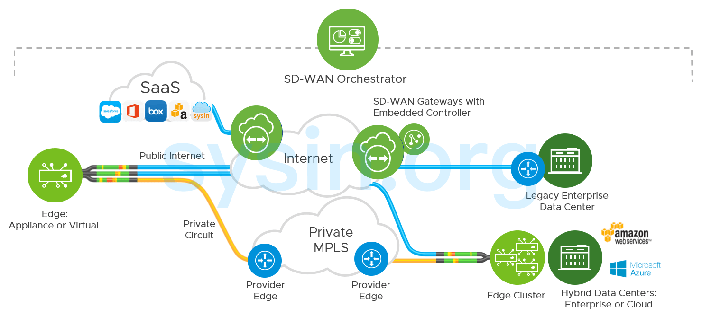

请访问原文链接：VMware VeloCloud SD-WAN 6.4 - 领先的 SD-WAN 解决方案 查看最新版。原创作品，转载请保留出处。
作者主页：sysin.org
VMware VeloCloud SD-WAN 6.4.0 | 2nd May 2025
- VMware VeloCloud SD-WAN™ Gateway Version R6400-20250429-GA
- VMware VeloCloud SD-WAN™ Edge Version R6400-20250429-GA
- VMware VeloCloud SD-WAN™ Orchestrator Version R6400-20250430-GA
VMware VeloCloud SD-WAN
跨云和应用程序提供高性能、可靠的分支访问。优化多个连接上的流量，以在任何地方提供更好的用户体验。

产品概述
软件定义的 WAN (SD-WAN)
什么是 VeloCloud SD-WAN？
VeloCloud SD-WAN 是基于软件的网络技术应用，可虚拟化 WAN 连接。VeloCloud SD-WAN 将网络软件服务与底层硬件解耦 (sysin)，以创建虚拟化网络覆盖。VeloCloud SD-WAN 使用户能够随时随地连接到应用程序，提供灵活性、简单性、性能、安全性和云规模。它还具有易于部署、集中管理和控制以及有保证的应用程序性能。SD-WAN 是安全访问服务边缘 (SASE) 架构的重要组成部分。
简化的 SD-WAN
了解软件定义的 WAN (SD-WAN) 的概述、被迅速采用的原因，以及企业实现的效益。
VMware 是 Gartner 2023 魔力象限中的领导者
VMware SD-WAN 继续在网络和安全领域引领发展！
降低带宽成本并将部署速度提高 10 倍
应对网络复杂性挑战，同时降低总体拥有成本并确保实现快速零接触式部署。
性能和可靠性
提供具有较高的性能、可靠性和传输能力的混合 WAN 以及提供商灵活性，以确保即使像语音和视频这样一些要求严苛的应用也能实现最佳性能。
云网络
利用云就绪网络消除数据中心回程开销 (sysin)，提供到公有和私有企业云的经优化的直接路径。
虚拟服务平台
单击一下即可减小分支机构的占用空间。借助 VMware SD-WAN，您可以在本地部署和云环境中无缝插入和链接虚拟化服务。
自动化和编排
集中式监控、可见性和云计算控制可实现零接触式分支机构部署，同时提供自动业务策略和固件更新、链路性能和容量测量。
功能特性
支持迁移到云环境
SD-WAN 提供混合、多云和 SaaS 功能，可满足当今企业需求。
简化 WAN 运维管理
通过自动化平台提供全局 WAN 可见性、敏捷性和扩展 (sysin)，从而使分支机构和远程站点部署变得简单。
端到端虚拟服务平台
SD-WAN 通过网络叠加将任何设备或任何用户连接到 WAN 上任何位置的任何应用，并提供深入的网络分析和安全保护。
多种边缘安全机制选择
云计算安全对 SD-WAN 至关重要，可借助 SD-WAN 平台，通过端到端分段和安全 VNF 实现。
解决方案组件
VMware SD-WAN Gateway™
VMware SD-WAN™ 是一个由部署在全球各地顶层云计算数据中心的服务网关组成的分布式网络，提供了可扩展性、冗余和按需灵活性。VMware SD-WAN Gateway™ 提供通向所有应用 (sysin)、分支机构和数据中心的经优化的数据路径，还能从云端提供网络服务。
VMware SD-WAN Edge™
VMware SD-WAN Edge™ 是一款零接触式企业级设备，能够以经过优化的方式安全地连接专有、公共或混合应用，以及计算和虚拟化服务。除了托管虚拟网络功能 (VNF) 服务外，VMware SD-WAN Edge™ 还执行深度应用识别、应用和数据包流量引导、性能计量，并维护端到端服务质量。
VMware SD-WAN Orchestrator™
除了编排通过云网络的数据流之外，VMware SD-WAN Orchestrator™ 还提供集中式企业级安装、配置和实时监控。VMware SD-WAN Orchestrator™ 支持一键式置备分支机构、云环境或企业数据中心中的虚拟服务。
新增功能
VMware VeloCloud SD-WAN 6.4.0 | 2nd May 2025
新功能与增强功能：
✅ Link Insights
Link Insights 功能可为整个 Enterprise 中的 Edges 提供链路性能洞察。此功能显示有关 Edge 故障的信息，提供链路性能、故障原因、受影响应用、流量分布等方面的洞察，有助于优化网络性能、故障排查、成本管理并提升用户体验。自 6.4.0 版本起，VeloCloud 在 Orchestrator 中引入了一个名为 Insights 的新标签页，该标签位于 Orchestrator 界面顶部菜单中，位于 Monitor 标签旁边，默认启用。Enterprise 用户和 Partner 用户均可访问此标签页。
要使用此功能，请点击 Insights，然后在左侧导航中点击 Link Insights，将显示以下界面：

✅ 降低无线链路上的 SD-WAN 控制流量
Wireless Link Management（无线链路管理）功能有助于减少 SD-WAN 控制流量并降低无线链路上的数据使用量。Orchestrator 允许 Enterprise 用户在 Profile 和 Edge 级别配置无线链路管理设置，有效减少无线链路上的数据消耗 (sysin)。启用方法：在 Edge 或 Profile 下，导航至 Device > Connectivity，点击 Wireless Link Management，并使用 Link Control Traffic Frequency 开关按钮进行设置。
✅ Edge 上的 LACP
此功能在 Edge 上启用 LACP（链路聚合控制协议），可将多个物理网络链路合并为一个逻辑链路，从而提升带宽并实现冗余。LACP 可自动创建和管理链路聚合组（LAG），动态配置聚合、检测链路故障并启用故障转移。
- 小型和中型 Edge（如不含 Marvell 交换机的 5x0/6x0 型号、Edge 710、710-5G、720、740）最多支持两个 LAG 端口。
- 大型 Edge（如 Edge 3400、3800、3810、4100、5100）最多支持四个 LAG 端口。
- 每个 LAG 最多可包含 8 个相同类型和速率的端口。
仅支持 LACP 主动模式（active mode），Edge 始终会发送 PDU。LAG 接口不能配置为 HA 端口 (sysin)，不支持配置 LACP 端口优先级。最多支持 8 个活动端口，所有从属端口均处于活动状态，即支持发送与接收（Tx/Rx）。
Phase 1 中不支持 IEEE 规范中定义的自动 LAG 配置，即不支持在无手动配置的情况下自动聚合链路。
✅ Symantec IPsec 双 WAN 链路支持
前提条件：
- 创建 SSE 订阅。
- 在 Edge 和 DCC 上启用 ECMP。
该功能支持在创建 SSE 集成时选择两个 WAN 链路，在两个所选链路上同时部署隧道。
ECMP 功能要求启用 DCC。
✅ 网络接口统计监控
此功能可监控接口级别的数据，用户可在 Orchestrator 的 Monitor > Edges > System > Interface 页面查看实时与历史接口统计信息。要查看接口数据，请导航至上述路径并选择 Interface 单选按钮。

✅ Edge 上的 ECMP 支持
该功能为 Edge 启用 ECMP（等价多路径路由），允许在多个 LAN/WAN 接口之间配置多个等成本（ECMP）的底层路由（支持静态/OSPF/BGP），从而提升吞吐量与冗余性。支持 BGP、OSPF 和静态路由，并通过负载均衡改善流量分布。需启用 DCC。
✅ 自定义应用程序
Enterprise 和 Partner 用户可创建 自定义应用程序，并在业务策略与防火墙规则中使用这些应用程序。
✅ 自定义告警
该功能支持配置自定义事件，并通过 Webhooks、SNMP 和电子邮件方式发送告警通知（不支持短信）。一旦触发条件满足，系统会自动向目标收件人发送通知。
✅ Orchestrator 自助品牌化
Enterprise 用户可以在客户级别自定义 Orchestrator 的用户界面，包括公司名称、Logo 及配色方案。
✅ 对象组扩展能力
将每个 Enterprise 可配置的对象组上限从 1000 提升至 2000（默认值）。可通过系统属性 "vco.object.groups.max.count.per.enterprise" 进行调整。每个 Edge 及其 Profile 可关联的对象组上限默认为 1000。
✅ VLAN 行为增强的防火墙规则
该增强功能允许用户在防火墙规则中，指定用于匹配源或目标 VLAN 的类型（End-to-End 或 Local）。添加 VLAN 匹配规则时将出现新的字段 VLAN Type，提供两个选项：
- End-to-End（默认）：当前防火墙引擎行为。
- Local：允许使用本地分支的 VLAN 标签，防火墙引擎将不再考虑远程 VLAN。
✅ 角色自定义易用性改进
改进了 Service Permissions（服务权限） 选项卡，提升角色自定义配置的用户体验。
✅ Edge 间未加密数据通道
此功能允许 SD-WAN 管理员在 Orchestrator 中为 WAN 链路开启或关闭加密 (sysin)。这对已经使用 Type-1 加密设备来保护高度敏感数据的客户尤为重要，因其不再需要 SD-WAN 隧道附加的加密，从而提升性能。
✅ Enterprise 网络概览改进
网络概览仪表板优化为两个标签页，分别显示流量使用情况与配置数据，并增强了交互性：
- 点击“Activated Edges”或“Links”中的数字，会跳转至带有对应筛选条件的 Edges 列表页。
- 仪表板支持选择要查看流量数据的时间范围。
- 流量小部件显示“按数据量排名的 Top 应用程序（Enterprise 级）”和“按数据量排名的 Top Edges”，点击应用程序可查看其在所有 Edges 上的使用情况。
✅ 用户身份验证安全策略改进
Partner 用户现在可直接在 Authentication（身份验证） 页面设置自定义密码策略。
✅ 多因素认证
为 Partner 用户引入了与 Enterprise 类似的双因素身份认证功能。
✅ Qosmos 升级
Qosmos Protobundle 与引擎升级至最新版本，支持识别 700 多个新应用及全部 AI 应用：
- Protobundle 升级至版本 1.730.1-24
- 引擎升级至版本 5.9.0
✅ VCMP 隧道使用 HMAC-SHA2
将 VCMP 隧道中 IKE 父 SA 的哈希算法从 SHA-1 升级为 SHA-2，以符合行业安全标准。
已解决的问题：
包含 140 项错误修复，篇幅过长，详见官方文档。
文件列表
VMware SD-WAN 6.0.0
VMware SD-WAN Orchestrator 6.0.0
| No. | Item | File Name (size) | Last Updated | SHA2 |
|---|---|---|---|---|
| 1 | VMware SD-WAN Public Key (sysin) | pubkey.pem(215 Bytes) | May 10, 2024 12.14PM | 375cd911402531b24e8713b13233c86fdb7a2ad0b5869f0a2097e92e6dfb2092 |
| 2 | VMware SD-WAN Orchestrator (for ESXi) | velocloud-orchestrator-6.0.0.1-R6001-20240421-GA-12e1f58903.ova(6.82 GB) | May 10, 2024 12.19PM | 5acd55cadeccd31b107c8626271a776a232b3f977dd1b02b54ef2ef9a84cf8b8 |
| 3 | VMware SD-WAN Orchestrator (for KVM) | velocloud-orchestrator-kvm-6.0.0.1-R6001-20240421-GA-12e1f58903.tar.gz(6.59 GB) | May 10, 2024 12.23PM | 42f88b372527b413bd69d4ad71874b762cfb322a26df8d17a6204f944d248a2a |
VMware SD-WAN Gateway 6.0.0
| No. | Item | File Name (size) | Last Updated | SHA2 |
|---|---|---|---|---|
| 1 | VMware SD-WAN Public Key (sysin) | pubkey.pem(215 Bytes) | May 10, 2024 12.49PM | 375cd911402531b24e8713b13233c86fdb7a2ad0b5869f0a2097e92e6dfb2092 |
| 2 | VMware SD-WAN Gateway (for KVM) | velocloud-vcc-v3-6.0.0.0-36300207-R6000-20240509-GA-95f198c815-kvm.qcow2(498 MB) | May 10, 2024 12.50PM | 253116b1a5863ad1c5019989f10c132bb1ca650de8573678d19b7a1140a74c4f |
| 3 | VMware SD-WAN Gateway (for ESXi) | velocloud-vcc-v3-6.0.0.0-36300207-R6000-20240509-GA-95f198c815.ova(473.27 MB) | May 10, 2024 12.50PM | b81f5ab0e838fd9d32dfadda15c8d799e3478887032894773a4d623357ed758b |
VMware SD-WAN Edge 6.0.0
| No. | Item | File Name (size) | Last Updated | SHA2 |
|---|---|---|---|---|
| 1 | VMware SD-WAN Edge (for KVM) | edge-VC_KVM_GUEST-x86_64-6.0.0.0-36300207-R6000-20240509-GA-95f198c815-updatable-ext4.qcow2.gz(437.85 MB) | May 10, 2024 11.32AM | 2574bede256ddad692d108f1a015c91d0ad44785218963d66a767a6371edea9a |
| 2 | VMware SD-WAN Edge (for ESXi) | edge-VC_VMDK-x86_64-6.0.0.0-36300207-R6000-20240509-GA-95f198c815-updatable-ext4.ova(501.32 MB) | May 10, 2024 11.33AM | eec7783d3cde6cd866c3ba34510d151b964ffce889fd2497a1716cf1eea724b4 |
| 3 | VMware SD-WAN Edge Upgrade Package (for Edge 840, 1000, 2000, and 3X00) | edge-imageupdate-EDGE1000-x86_64-6.0.0.0-36300207-R6000-20240509-GA-95f198c815.zip(207.78 MB) | May 10, 2024 11.32AM | 23e76485b712336a50045d1062a3434fafeaf0097489d6c0c434c40ca7a5eb60 |
| 4 | VMware SD-WAN Edge Upgrade Package (for Edge 500, 510, 510-LTE, 5X0, and 6X0) | edge-imageupdate-EDGE5X0-x86_64-6.0.0.0-36300207-R6000-20240509-GA-95f198c815.zip(208.2 MB) | May 10, 2024 11.31AM | e1aac6cd638383b5250a1660905070b4058332b6349b093c03a653844fa647cc |
| 5 | VMware SD-WAN Edge Upgrade Package (for Edge 710-W) | edge-imageupdate-EDGE7X0-x86_64-6.0.0.0-36300207-R6000-20240509-GA-95f198c815.zip(200.95 MB) | May 10, 2024 11.31AM | 1ca6a302d78a1cc3f51c302e4c6b7a96b69e997322f68a11673ee64cac5a7dc9 |
| 6 | VMware SD-WAN Edge Upgrade Package (for KVM) | edge-imageupdate-VC_KVM_GUEST-x86_64-6.0.0.0-36300207-R6000-20240509-GA-95f198c815.zip(201.01 MB) | May 10, 2024 11.32AM | 37315d1b44358740f3e884c1b26165a2edc979f266f2ea78bf3af9970031b83a |
| 7 | VMware SD-WAN Edge Upgrade Package (for ESXi) | edge-imageupdate-VC_VMDK-x86_64-6.0.0.0-36300207-R6000-20240509-GA-95f198c815.zip(201.69 MB) | May 10, 2024 11.32AM | 4d965d06437703771f09a3ea4093d9a53a8e957f71e50143866083b7ff390382 |
| 8 | VMware SD-WAN Edge Upgrade Package (for Cloud) | edge-imageupdate-VC_XEN_AWS-x86_64-6.0.0.0-36300207-R6000-20240509-GA-95f198c815.zip(201 MB) | May 10, 2024 11.32AM | ec842ff5fe1a3f8e5996bfdd9f34fd4b31301e12dba3871358233d509954933a |
| 9 | VMware SD-WAN Default Application Map (sysin) | r6000_app_map.json(1.39 MB) | May 10, 2024 11.33AM | dae4dc92b8956458a2a4d5bb01dfc4b3fe3a43cde4925e8be113a062b160aeec |
下载地址
VMware SD-WAN 6.0.0（约 17GB，文件完整！）
- 百度网盘链接：https://pan.baidu.com/s/1mnG6_mFQsPXAeqK6wTdKnQ?pwd=<专享已公布>
- 通过捐赠下载此版本：点击 💙支付宝 或者 💚微信支付，扫码备注邮箱（用于识别注册用户，忘记备注请提供时间），
评论区留言指定版本（默认当前最新版），在其他平台留言恕无法处理。 - 提示：捐赠或赞赏属于自愿赠予行为，提交后即表示您对作者的支持与认可。为避免误操作，请在确认前仔细检查金额，支付完成后将无法撤销或退还。
- 请指定一个平台，ESXi 或 KVM：有 ESXi 和 KVM 两个版本可选，默认提供 ESXi 版本，公用组件部分相同。
- VMware SASE™ Orchestrator Version R6003-20240523-GA
- VMware SD-WAN™ Gateway Version R6000-20240509-GA
- VMware SD-WAN™ Edge Version R6000-20240509-GA
VMware VeloCloud SD-WAN 6.4.0（约 23GB，文件完整！）
- 百度网盘链接：https://pan.baidu.com/s/1nHIgiM0InEYeQFUm4TgYYQ?pwd=<专享已公布>
此项仅提供给已获得 5.x 或者 6.x 的用户，新用户请勿捐赠。- 通过捐赠下载此版本：点击 💙支付宝 或者 💚微信支付，扫码备注邮箱（用于识别注册用户，忘记备注请提供时间），
评论区留言指定版本（默认当前最新版），在其他平台留言恕无法处理。 - 提示：捐赠或赞赏属于自愿赠予行为，提交后即表示您对作者的支持与认可。为避免误操作，请在确认前仔细检查金额，支付完成后将无法撤销或退还。
- 请指定一个平台，ESXi 或 KVM：有 ESXi 和 KVM 两个版本可选，默认提供 ESXi 版本，公用组件部分相同。
- VMware VeloCloud SD-WAN™ Gateway Version R6400-20250429-GA
- VMware VeloCloud SD-WAN™ Edge Version R6400-20250429-GA
- VMware VeloCloud SD-WAN™ Orchestrator Version R6400-20250430-GA
- VeloCloud SD-Access Client
VMware SD-WAN Client 1.x for macOS, Windows
上一个可下载的版本：
相关产品：Gartner Magic Quadrant for SD-WAN 2023

文章用于推荐和分享优秀的软件产品及其相关技术，所有软件默认提供官方原版（免费版或试用版），免费分享。对于部分产品笔者加入了自己的理解和分析，方便学习和研究使用。任何内容若侵犯了您的版权，请联系作者删除。如果您喜欢这篇文章或者觉得它对您有所帮助，或者发现有不当之处，欢迎您发表评论，也欢迎您分享这个网站，或者赞赏一下作者，谢谢！
 支付宝赞赏
支付宝赞赏  微信赞赏
微信赞赏赞赏一下
敬请注册！点击 “登录” - “用户注册”（已知不支持 21.cn/189.cn 邮箱）。 请勿使用联合登录（已关闭）。